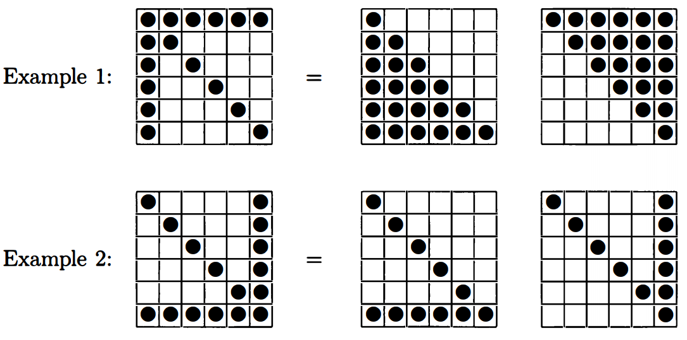

20261117 - Linear Systems¶
Very often, we need to solve linear system of equations, in the form of the matrix problem
\(x \in \mathbb{R}^n\) is the solution vector
\(A \in \mathbb{R}^{n \times n}\)
\(b \in \mathbb{R}^n\) is some RHS forcing term
The solution is described as
There are many different ways to solve for these problems:
Directly compute \(A^{-1}\), then do matrix multiplication
Perform direct solve of \(x\) without explicitly forming \(A\)
Find a close approximation of the solution \(x\) via an interative method
Direct Compute Inverse¶
Explicitly compute the inverse \(A^{-1}\)
Then do matrix-vector product \(x = A^{-1}b\)
Simple!
Big important (unfortunate) fact:
A sparse matrix will (in general) have a dense inverse
A few minor exceptions to this, but generally is the case
Often, when it’s not the case, directly computing and applying \(A^{-1}\) is not
Direct Solve¶
While still having “direct” in the name, we never explicitly compute or store \(A^{-1}\)
Instead, we directly solve for \(x\)
Gaussian Elimination¶
Gaussian elimination is the simplest example of a direct solve
Basically the technique you learned in high school for solving a system of equations
Substitute equations together to simplify them until you find the value of one variable
The substitute those values back in to find the solution
Add and subtract rows selectively to zero out (eliminate) components of the matrix
Gaussian elimination is generally numerically unstable
As you eliminate terms, the matrix slowly morphs away from it’s original state due to numerical precision
For large matrices (or matrices with large condition number), this adds up quickly
Example:
The exact solution is
but straight Gaussian elimination with 4 digits of precision (about the same as FP16) will result in
The solution is to do pivoting, where we rearrange the rows of the system as we solve it to have more similar-sized diagonals.
So chaging the previous example to
results in the correct answer in 4-digit arithmetic
Factorization Methods¶
These are the most popular methods for doing a direct solve
These decompose \(A\) in the product of two other matrices
Examples
LU: \(A = LU\), where \(L\) is lower triangular and \(U\) is upper triangular
QR: \(A = QR\), where \(Q\) has orthonormal columns and \(R\) is upper triangular
Cholesky: \(A = LL*\), where \(L\) is lower triangular
We’ll focus on LU
LU factorization is just a rearrangement of Gaussian elimination
Effectively a way for mathmeticians to talk about Gaussian elimination process without having to talk about specific algorithms
Once you decompose \(PA = LU\), where \(P\) represents the pivoting applied to the matrix, then you can solve the system in two steps:
Both steps for solving the lower and upper triangular problem are trivial (the row with one entry gives the exact solution, then you back substitute to get the rest)
Costs:
Forming \(L\) and \(U\) takes approximately \(\mathcal{O}(2/3 n^3\) operations for dense \(A\)
Solving the linear system takes \(\mathcal{O}(2 n^2\)
The cost of forming \(L\) and \(U\) are (asympototically) the same as forming \(L\) and \(U\)
Then we can solve the same linear system for different RHS \(b\)
In practice, solving using LU is significantly faster than forming \(L\) and \(U\), so it’s often done rather than straight Gaussian elimination
Factorization for Large Sparse systems¶
For large sparse systems, \(L\) and \(U\) (or any factorization) will not necessarily be sparse.
Often times, they are quite dense.
Choice of initial ordering matters for how sparse the resulting matrices are
Example of Cholesky factorization:

Fill-in determined by the sparsity pattern alone
Reducing fill-in was the actual purpose of Cuthill-McKee reordering
Large systems still need pivoting to maintain numerical stability
Pivoting affects sparsity of \(L\) and \(U\), thus have contention
Regardless of what methodology you have, direct solve on large sparse systems is very expensive and often not necessary.
Only useful for specific matrix structures where we know how to reduce fill-in easily
e.g. banded matrices
We’ll shift to the most popular way of handling this: iterative methods
Iterative Methods¶
These methods attempt to find
where
The residual of the \(k\)th approximation is:
Iterative methods keep generating new \(x_k\) until the residual is deemed “good enough”
Note that the residual is not the error, but a stand-in for it
while norm(r) < tolerance:
x_new = compute_new_x(x_old, A)
evalutate_residual(x_new, A, r)
x_old = x_new
Richardson iteration¶
The simplest iterative method is Richardson’s method, which solves \(A x = b\) by the iteration
where \(\omega > 0\) is a damping parameter and \(x_0\) is an initial guess (possibly the zero vector).
If \(b = A x_*\), this iteration is equivalent to
It is convenient for convergence analysis to identify the “error” \(e_k = x_k - x_*\), in which this becomes
or
in terms of the initial error. Evidently powers of the iteration matrix \(I - \omega A\) tell the whole story.
Krylov-subspace Methods¶
These build approximations of \(x\) as linear combinations of
This is the Krylov subspace.
Krylov subspace methods constitute the most popular iterative linear solvers out there
Congugate Gradient (CG), GMRES, BiCGStab
Each method has different matrix compatabilities and algorithmic advantages/disadvantages
CG is by far the simplest algorithmically, only works for symmetric positive-definite matrices
GMRES most popular generic matrix solver, but BiCGStab also handles that
GMRES uses less vectors per iteration, but requires orthogonalization (which has an extra global reduce step, e.g. synchronization)
BiCGStab doesn’t require orthogonalization, but stores double the number of vectors
Pipelining¶
while norm(r) < tolerance:
compute_new_x(x_old, A)
evalutate_residual(x_old, A, r)
All ranks ahve to wait for norm to be computed (global syncronization)
Often, this test fails, so we do more iterations
So we’re waiting around for an answer that nearly always means we need to do more iterations
Solution: Do the next iteration anyways!
e.g. communication-computation overlap, but algorithmically
While we wait for the norm to be communicated, we compute the next iteration anyways
If the previous norm meets the stopping criteria, we use the already-computed iteration anyways
This is known as pipelining
Applicable to nearly every iterative method
Grealty improves strong scalability
Iterative solvers big picture¶
Regardless of what specific method you use, iterative solvers (nearly) have one big thing in common:
They only require matrix-vector products and vector algebra
This makes them very ameanable to parallelizable programs
We’ve been going over parallelized vector operations for nearly the entire course for a reason
Only needing matrix-vector products also means we don’t even need to have a matrix, so-called “matrix-free” methods
A “matrix” is just a finite-dimensional representation of a linear operator
If we have a function which computes the linear operator directly, then we don’t need a matrix at all
Matrix-free is important from a arithmetic intensity standpoint
Sparse matrix-vector product is around 0.2 FLOPs/byte
Matrix-Free for “high” order FEM is around 6 FLOPs/byte (optimally)